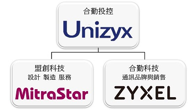

合勤介紹
合勤集團以合勤投控為母公司，以合勤科技與盟創科技為其旗下子公司。合勤科技聚焦於合勤集團品牌發展，盟創科技則專注於產品與技術創新；兩家公司的經營團隊運作服務各自客戶，以提高品牌及代工客戶更好的服務。 合勤科技的產品開發團隊將秉持創新的精神，提供電信服務供應商、企業用戶、以及家庭使用者優質的產品與服務。盟創科技的產品設計服務團隊則將以先進的軟硬整合技術與高品質的專業代工，滿足客戶的需求。 合勤集團不以單純由產品或單一網路產品技術角度來訂定發展策略，而是以建立架構特定應用服務為思考基準點，再延伸思考後續產品與市場策略佈局。同時合勤集團積極投入的新產品以單一技術的產品裝置，而是融合多種技術的產品， 以提供應用服務的運行需求。為持續追求經濟規模及營收成長，合勤集團以策略性投資方式提供旗下關係企業更好的發展平台，各自專注與深耕經營，以提升整體競爭力，蓄積下階段成長動能。 合勤集團目前於北美、中國大陸、東南亞、歐洲及中東等地設有超過40個分公司，目前合勤集團員工人數超過4400人。 合勤集團承諾對社會與環境責任給予持續關注與力行，努力為股東和投資人爭取最大利潤，並支持與發揚社會優良價值，期能善盡己力，扮演好企業公民的角色。
關於合勤
近30年來，合勤科技專注於創新與滿足客戶所需，透過網路將人與人連結在一起。自1992年合勤科技研發出全世界第一台結合數據/傳真/語音的三合一數據機，我們便持續激盪創意來滿足客戶的需求，且從未減退我們對研發的熱忱。 合勤科技能因應日新月異的網路技術並持續創新，這可讓我們站在第一線去了解電信服務供應商、企業以及家庭用戶的需求。 合勤科技建構中的未來網路，能幫助世界激發無限可能，並滿足現代職場的需求，提供人們在工作、生活及娛樂各方面游刃有餘的新動力。 我們與客戶及事業伙伴們並肩作戰，透過分享新的網路技術，將大家的潛在能力發揮得淋漓盡致。我們是你忠實的朋友、強大的盟友、可靠的資源－我們是合勤科技，Your Networking Ally.